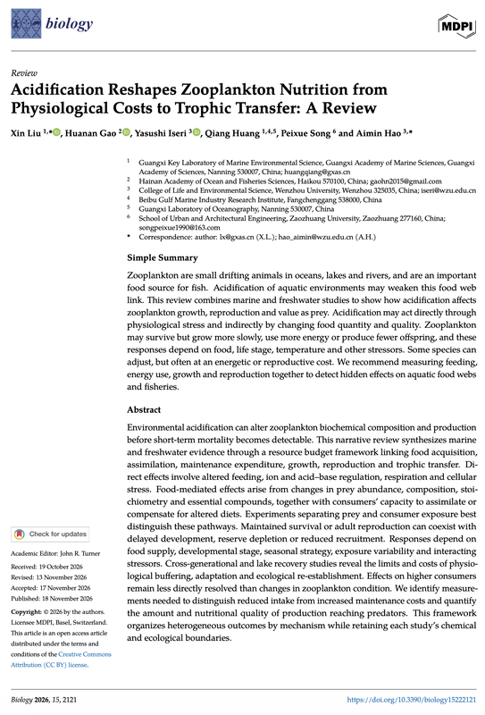

New paper has published online! Biology
Liu X.*, Gao H., Iseri Y., Huang Q., Song P., Hao A. (2026) Acidification Reshapes Zooplankton Nutrition from Physiological Costs to Trophic Transfer: A Review. Biology, 15:2121, doi:10.3390/biology15222121. 中科院2区，JCR 1区，IF = 4.3 (2025).
